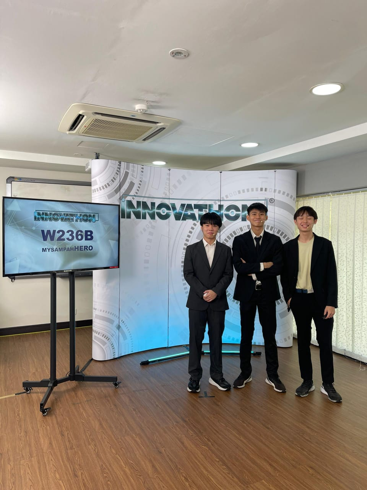
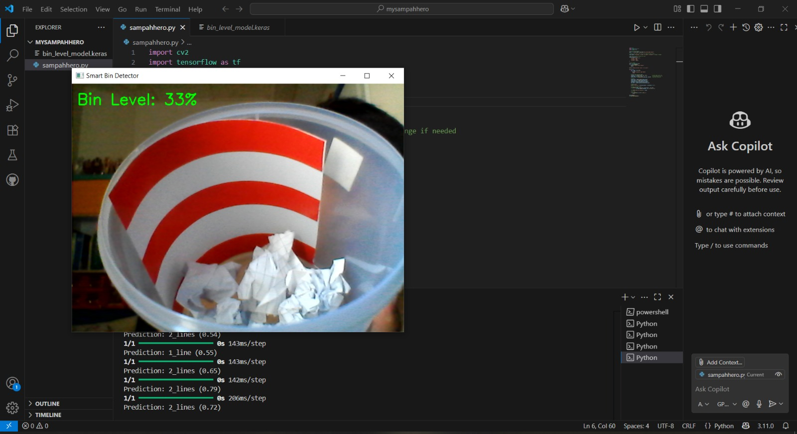
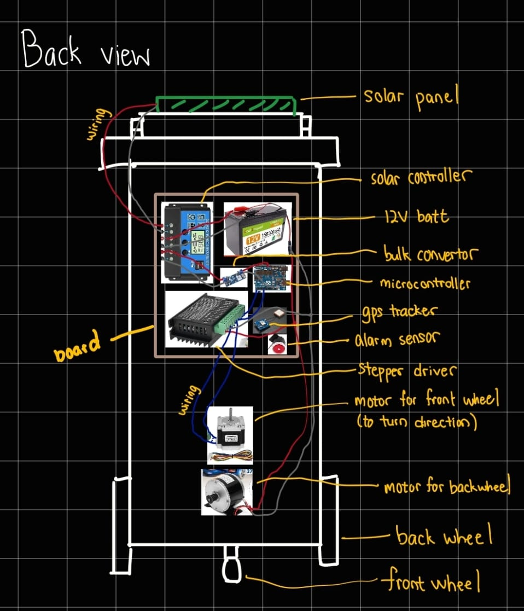

MySampahHero
AI-Powered Smart Waste Management System
Tech Stack
Overview
MySampahHero is an intelligent waste management system designed to improve collection efficiency and support sustainable urban living. Developed for the 2025 Astro Innovathon S3, the system integrates AI-powered smart bins, automated discharge mechanisms, and a mobile application to optimize waste collection processes. By combining computer vision and system integration, the solution enables real-time monitoring of bin capacity and smarter waste logistics.
Awards & Honors
MySampahHero was recognized as a Finalist at the 2025 Astro Innovathon S3, organized by the Ministry of Economy, the Ministry of Science, Technology and Innovation (MOSTI), and Astro Malaysia. The project was acknowledged for its innovative approach to smart waste management and sustainability.
Problem
Urban waste management systems often face inefficiencies such as:
- Lack of real-time monitoring of bin capacity
- Overflowing bins due to delayed collection
- Inefficient collection routes and scheduling
- High operational costs and resource wastage
- Limited integration of smart technologies in waste systems
These challenges lead to poor sanitation, increased costs, and reduced sustainability in urban environments.
Solution
MySampahHero introduces an AI-powered smart bin system that monitors waste levels and optimizes collection workflows. The system uses a YOLO-based object classification model to estimate the percentage of bin storage in real-time by analyzing visual input. This data is integrated into a mobile application, enabling efficient tracking and management of waste levels across multiple locations.
In addition, the system features an automated discharge mechanism where the smart bin is capable of navigating autonomously towards designated residential hubs for waste disposal. A built-in navigation system allows the bin to move efficiently to the discharge point, reducing the need for manual collection and improving operational efficiency. By combining AI, automation, and system integration, the solution enhances waste collection efficiency and promotes smarter, more sustainable urban management.
Key Features
-
AI-Based Storage Detection (YOLO)
Estimates bin fill level using image-based classification
-
Smart Bin Monitoring
Tracks waste levels in real-time to prevent overflow
-
Autonomous Navigation & Discharge
Smart bin navigates to designated hubs for automated waste disposal
-
Mobile App Integration
Provides monitoring and management interface for users
-
Optimized Waste Collection
Supports better scheduling and resource allocation
Future Development
Future improvements include enhancing the accuracy of the AI model by expanding the dataset across different waste types and lighting conditions. Additional features such as route optimization for waste collection and integration with smart city infrastructure can further improve efficiency. Usability testing and system scaling will also be explored to ensure the solution is practical and effective for real-world deployment.
Although this project is currently a prototype, it demonstrates strong potential for future adoption. I foresee this type of autonomous and AI-driven waste management system becoming increasingly implemented over the next 20 years, especially in metropolitan areas, as cities move towards more efficient, automated, and smart urban living solutions.
Project Gallery


